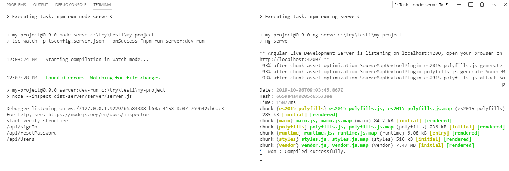

Running the Development Environment
Now that we have our new project configured, we want to run it.
Open Visual Studio code in the folder of your project (my-project in our case).
The different servers
When developing an angular application in a dev environment we'll need two servers,
- Angular dev server - used by Angular for the front end development (the ui that'll run in the browser),
- Node JS web server - is the Actual server, where all the data access will be and all the heavy lifting will be done.
Visual Studio Tasks
We'll use visual studio tasks to run our common tasks.
To run a visual studio task, we'll go to the menu Terminal\Run Task... and select the task we want to run.
Alternatively you can click Control + Shift + P to open visual studio's code command pallet
and select Tasks:Run Task

And then the task you want to run.
1. Run the Node JS server - npm:node-serve
- Go to menu `Terminal\Run Task..."
- Select
npm:node-serve
2. Run the Angular dev server npm:ng-serve
- Go to menu `Terminal\Run Task..."
- Select
npm:ng-serve
Great, now we can start
Once both tasks settle down you should see at the bottom of your screen the output of both tasks: 
Simply open a browser with the url http://localhost:4200 and you'll see your application running

A little more information
the task
npm:node-servebuild the code that will run on the NodeJS server and runs it.Whenever a code file changes, it'll automatically rebuild the project and restart it.
The task
npm:ng-serveruns the angular dev server, after it completes, you can open a browser using thehttp://localhost:4200url.Whenever a code file changes, it'll automatically refresh the browser to reflect that change.
Help us improve, Edit this page on GitHub